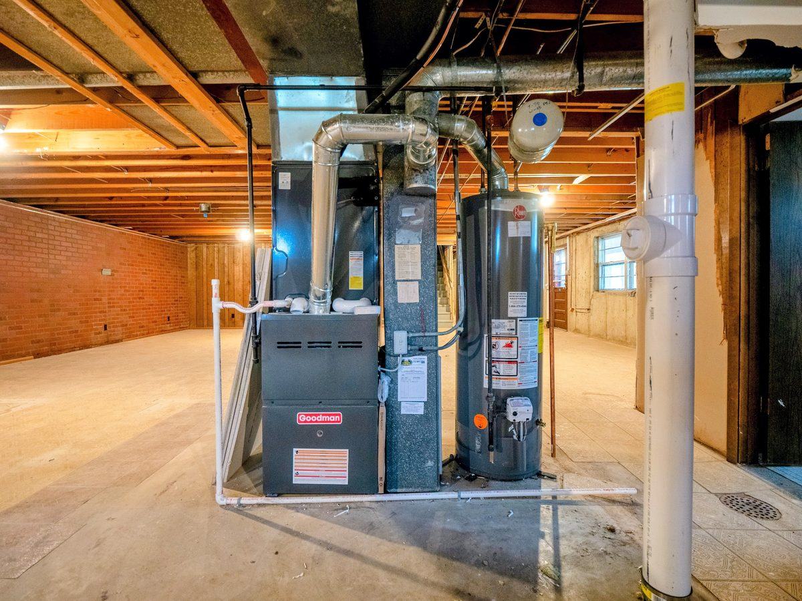
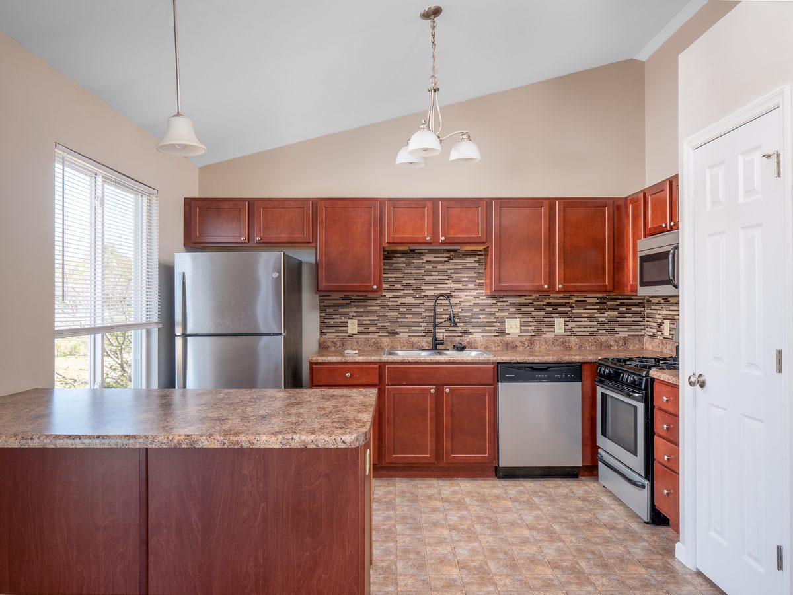

STL Home Buyer Journey
George Kindler
13 Years Of Real Estate Experience At Your Fingertips
The inspection report is not a repair list. It is a negotiation tool. Most St. Louis buyers use it wrong -- here is what actually happens and what to do with the findings.

Basement mechanical systems — what inspectors evaluate on every St. Louis home

Updated kitchen — what buyers find in move-in ready St. Louis homes
The home inspection happens after your offer is accepted and you are under contract -- typically within the first 5 to 10 days of the contract period, which is governed by your inspection contingency deadline. You hire and pay for the inspector. The seller does not get to choose who inspects the home.
The inspection is your window to verify what you are buying before you are fully committed. In Missouri, buyers have the right to conduct a home inspection and submit an inspection objection within the timeframe specified in the contract. Missing that deadline means you proceed as-is.
A standard home inspection in St. Louis runs $350 to $600 depending on the size and age of the home. Larger homes, older homes, and homes with additional systems (well, septic, pool) run toward the top of that range. The inspection fee is paid directly to the inspector, usually at the time of service.
Add a sewer lateral scope ($150 to $300) on any St. Louis home built before 1980. Clay tile sewer laterals are endemic in the older housing stock here and lateral failure is one of the most common post-closing surprises buyers face. A radon test ($100 to $150) is recommended for any home with a basement -- Missouri has elevated radon levels in many areas.
A licensed Missouri home inspector follows ASHI or InterNACHI standards and covers all major systems and components visible and accessible at the time of inspection. This includes:
What inspectors do not cover: sewer lateral condition (requires separate scope), radon (separate test), mold (separate testing), chimney interior (requires separate sweep inspection), or underground oil tanks. These require add-on specialists.
That gap is exactly why what buyers regret most after buying a cheap house in St. Louis so often comes down to infrastructure problems that a standard inspection missed. Always add a sewer scope in South City and pre-1970 South County homes.
Yes. Always. Your presence at the inspection is how you get the education that makes the report useful. An inspector pointing at an HVAC unit and explaining that it is 16 years old and showing signs of heat exchanger cracking is more useful than reading "HVAC showing signs of wear" in a report. Ask questions. Take notes. Take photos.
The inspection typically takes 2.5 to 4 hours depending on the size and age of the home. Plan to be there for the full duration and to spend 20 to 30 minutes at the end reviewing findings with the inspector. The verbal summary at the end is often the most useful part of the day.
Modern home inspection reports are detailed documents, often 40 to 80 pages with photos of every finding. Inspectors use a categorization system -- typically "safety concern," "repair recommended," and "monitor" or equivalent. The report will have items in every category on any house more than five years old. That is normal and does not mean the house is a disaster.
Your job is to identify the items that are material -- expensive to address, safety hazards, or systemic problems -- and separate them from routine maintenance items that would appear on any home's inspection.
Within the inspection contingency period, you have three paths:
An inspection objection is a negotiation, not a demand list. Focus it on the material items -- the expensive, the safety-related, and the systemic. A seller presented with a 40-item objection list covering every minor maintenance note will respond very differently than one presented with a focused three-item list with documented repair estimates.
Get contractor estimates for the material findings before you submit your objection. A specific ask backed by a specific number is far harder for a seller to dismiss than a general complaint. "We are requesting a $6,400 price reduction based on the attached HVAC replacement estimate" closes negotiation faster than "the HVAC is old."
Some sellers -- particularly those who have priced the home to reflect as-is condition -- will not negotiate on inspection findings. In that case, your decision is binary: proceed knowing what you know, or terminate and move on. What you should not do is proceed and pretend the findings do not exist. You now know what the home has. Price that into your thinking about whether to proceed.
On properties that have been on the market 45+ days, sellers are generally more willing to negotiate because they have already demonstrated they are not selling at full price to someone else. If the inspection surfaces real issues on a stale listing, the seller's alternatives are limited.
See how to build a negotiation position from inspection findings. How Repair Costs Should Affect Your Offer Price → → Real case study: $30K off before inspections even started. The $30K Case Study → → How a $30,000 price reduction happened -- and the math behind it. $30K Price Reduction Case Study → →How much does a home inspection cost in St. Louis?
A standard home inspection in St. Louis runs $350 to $600 depending on the size and age of the home. Add $150 to $300 for a sewer lateral scope on any pre-1980 home, and $100 to $150 for a radon test. Plan to spend $600 to $1,000 total on due diligence costs for a thorough inspection.
Can the seller refuse to fix inspection items in Missouri?
Yes. Missouri sellers are not required to make repairs as a condition of sale. They can accept your inspection objection, counter it, or reject it entirely. If they reject it, you can proceed as-is or terminate the contract within the inspection period and recover your earnest money.
How long is the inspection period in Missouri?
The inspection period in Missouri is typically set in the purchase contract -- commonly 10 days but negotiable. Your inspection objection must be submitted before the deadline stated in your contract. Missing the deadline means you waive the right to object to inspection findings.
Should I get a sewer scope with my home inspection?
Yes, on any St. Louis home built before 1980. Clay tile sewer laterals are standard in St. Louis older housing stock and lateral failure is one of the most common and expensive post-closing surprises. A camera scope runs $150 to $300. If the scope reveals serious issues, that is either a negotiating point or a reason to walk -- both much better than finding out after you close.
What is the difference between an inspection objection and a request for repairs?
An inspection objection is a formal contract document submitted within the inspection period that requests repairs, price reductions, or closing credits based on inspection findings. A repair request is informal. Always use the formal inspection objection process -- it preserves your contractual rights and documents the negotiation.
This is one piece of the St. Louis home buying process. See how it all fits together:
📚 Complete St. Louis Buyer Guide →
Grew up in South St. Louis, lived in Dogtown for 6 years, now in South County. You'll find us at White Flag Church on Sundays. This is my city, and I know it well.
Questions about what you are reading? I answer personally -- no team, no handoff.